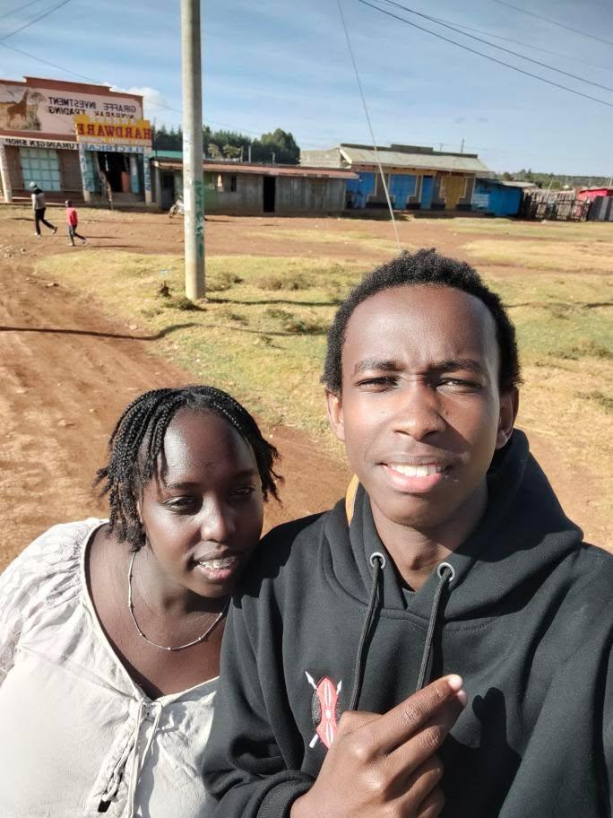

This is an image on the day that we celebrated the life of my grandfather.
This is an image that reflects on my personal growth, healing and self-improvement journey.

This a picture with one of my firends who has been a huge part of my journey.
This is an image of a friend that who was there or me at my lowest and was a biggest part of my healing journey.
This is an image on the day that we celebrated the life of my grandfather.
This is a video of my sister and I vibing to one of our favorite songs.
My biggest aspirations is to be able to achieve all my goals.
One of my biggest aspirations is to achieve financial freedom.
Maldives is one of the tourist destination sites that has been on my checklist since i was a kid.
would like visit Maldives becauese of it's beautiful terrain, sandy beaches, beautiful sunsets ans sunrises and so much more.
Hopefully, by the end of this bootcamp, my hardwork would have paid off and I would get employed so that I can save enough just to take myself on a solo vacation to maldives.
Switzerland is just so beautiful, talk about the Swiss Alps
What makes me want to travel ther is just the natural landscape with all the mountanious views.
South Africa is one the African countries I would like to visit because of it's rich history and cultural identity.
It would be nice to get such an experience apart from the kenyan history that I am very much farmiliar with.

I really justcrave for the experience cause it just looks really fun.
Learning how to crochet is a beneficial skill as you can earn money with it as a side hustle.
.jpeg)
A picnic at the beach is a really nice way to appr